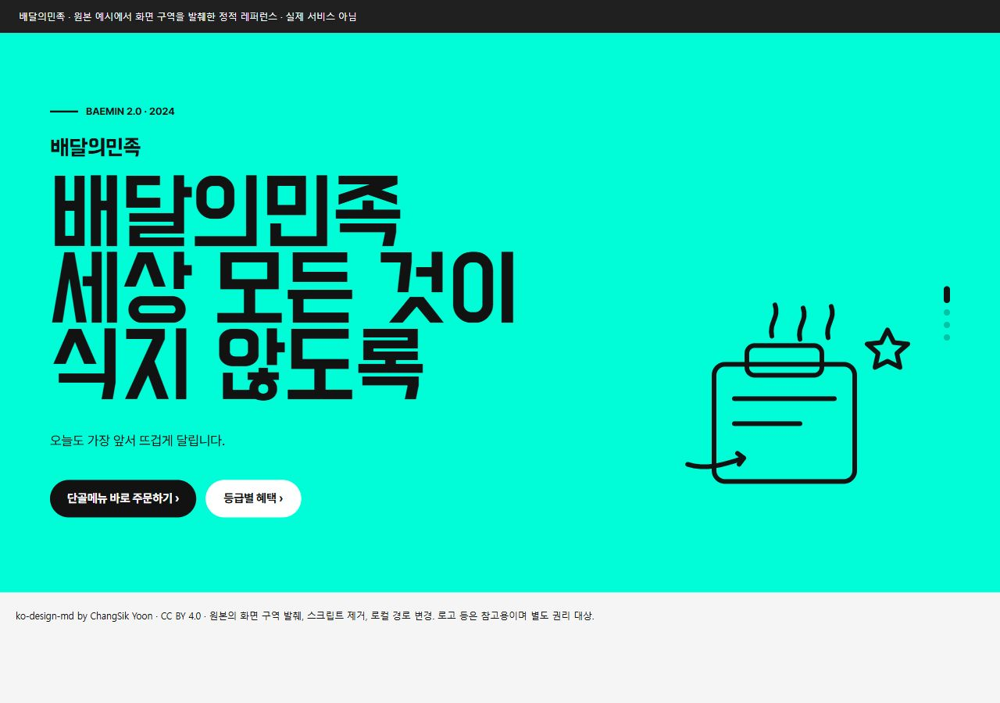원본 화면 발췌 ↗01 / 한국 / 브랜드·커머스배달의민족민트색 면과 굵은 한글의 리듬지역 커머스·음식·친근한 브랜드화면 크게 보기 ↗DESIGN.md ↓적용 안내출처프롬프트 복사
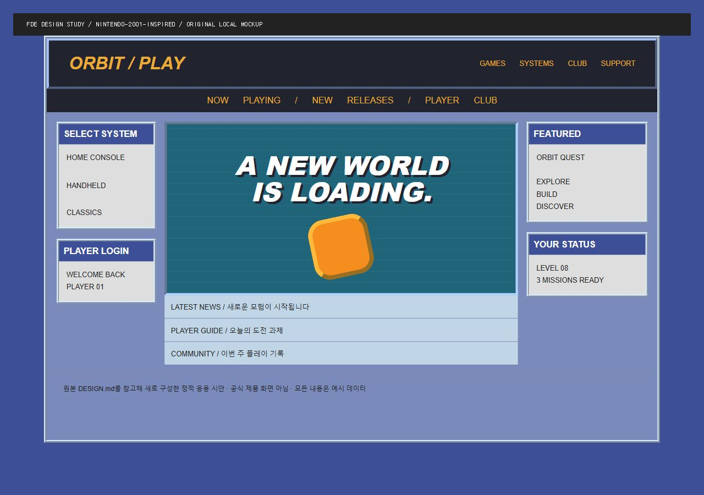MD 기반 신규 시안 ↗02 / 해외 / Y2K 게임 포털Nintendo 2001베벨 패널과 콘솔 같은 내비게이션게임·커뮤니티·팬 프로젝트화면 크게 보기 ↗DESIGN.md ↓적용 안내출처프롬프트 복사
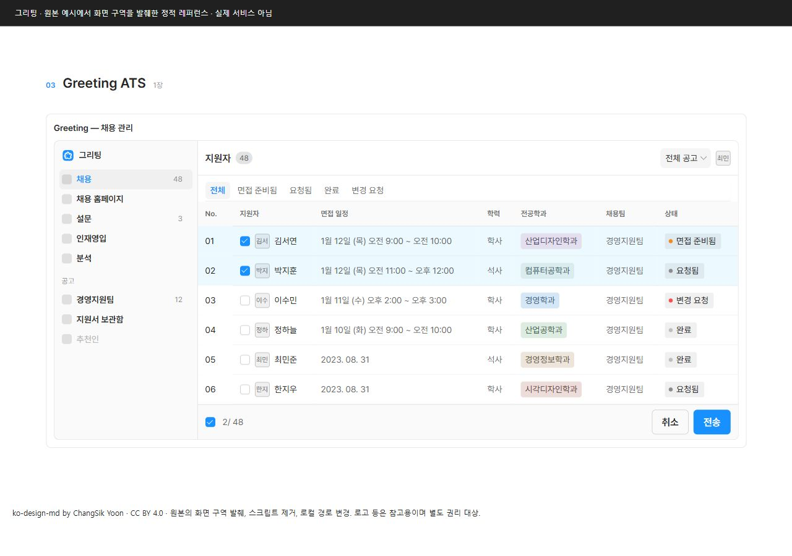원본 화면 발췌 ↗03 / 한국 / 업무 콘솔그리팅사이드바와 촘촘한 지원자 표승인 큐·CRM·채용 관리화면 크게 보기 ↗DESIGN.md ↓적용 안내출처프롬프트 복사
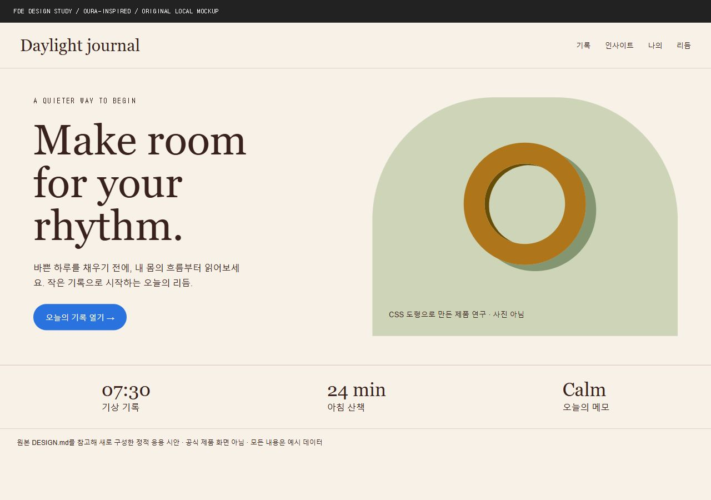MD 기반 신규 시안 ↗04 / 해외 / 웰니스 에디토리얼Oura크림색 종이와 세리프, 비대칭 구성건강 기록·리서치·라이프스타일화면 크게 보기 ↗DESIGN.md ↓적용 안내출처프롬프트 복사
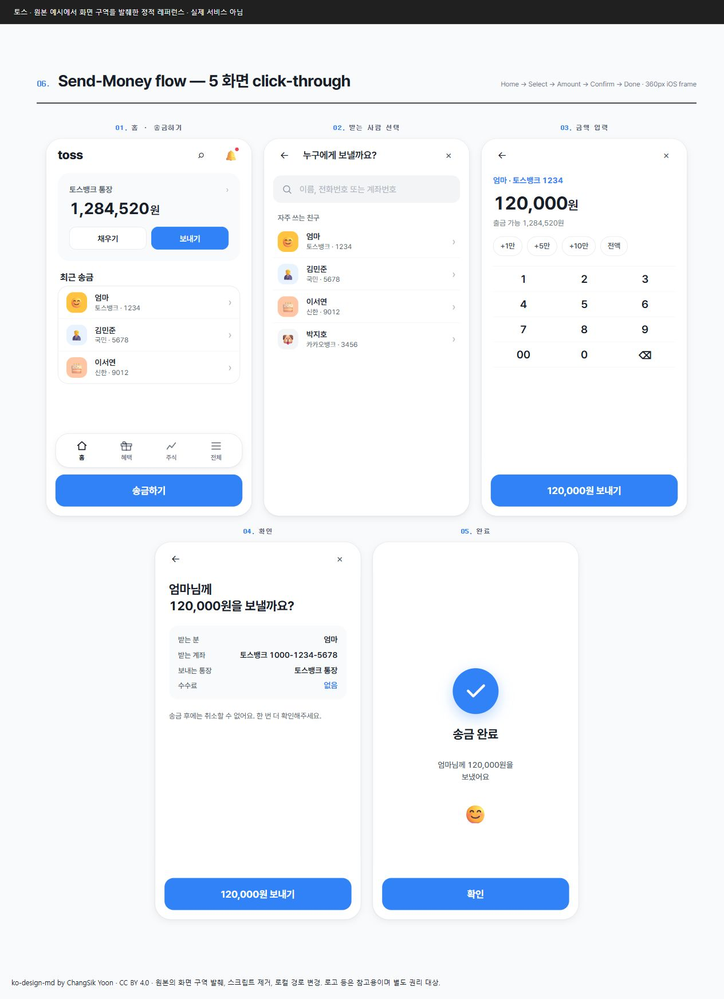원본 화면 발췌 ↗05 / 한국 / 모바일 금융토스큰 숫자와 단계별 송금개인 금융·신청 절차·결제 확인화면 크게 보기 ↗DESIGN.md ↓적용 안내출처프롬프트 복사
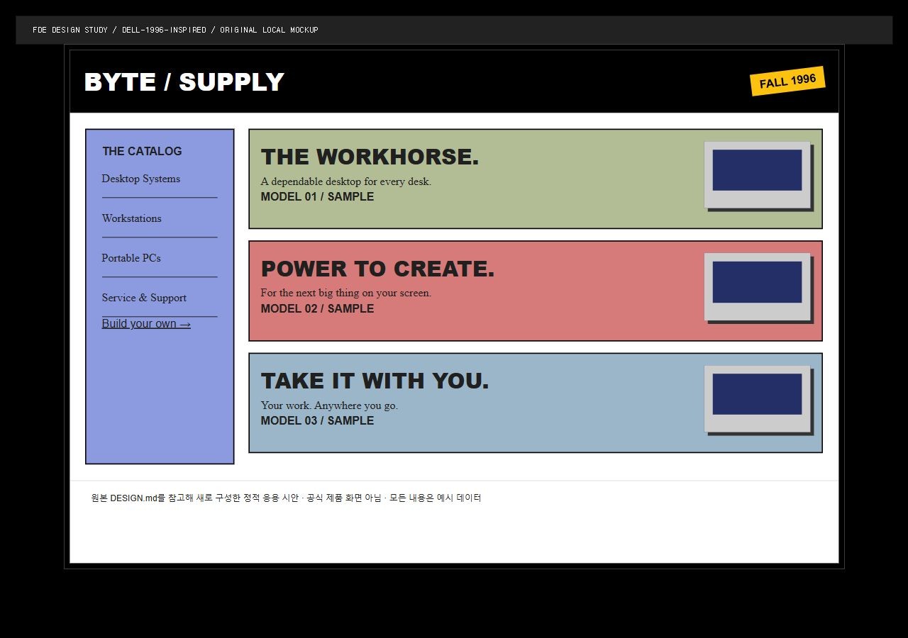MD 기반 신규 시안 ↗06 / 해외 / 레트로 카탈로그Dell 1996검정 프레임과 평면 색띠제품 카탈로그·개성 있는 포트폴리오화면 크게 보기 ↗DESIGN.md ↓적용 안내출처프롬프트 복사
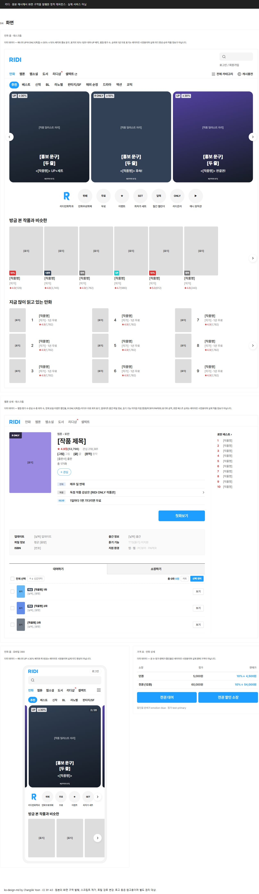원본 화면 발췌 ↗07 / 한국 / 콘텐츠 서가리디표지와 가로 탐색, 콘텐츠의 밀도웹툰·문서 라이브러리·교육 콘텐츠화면 크게 보기 ↗DESIGN.md ↓적용 안내출처프롬프트 복사
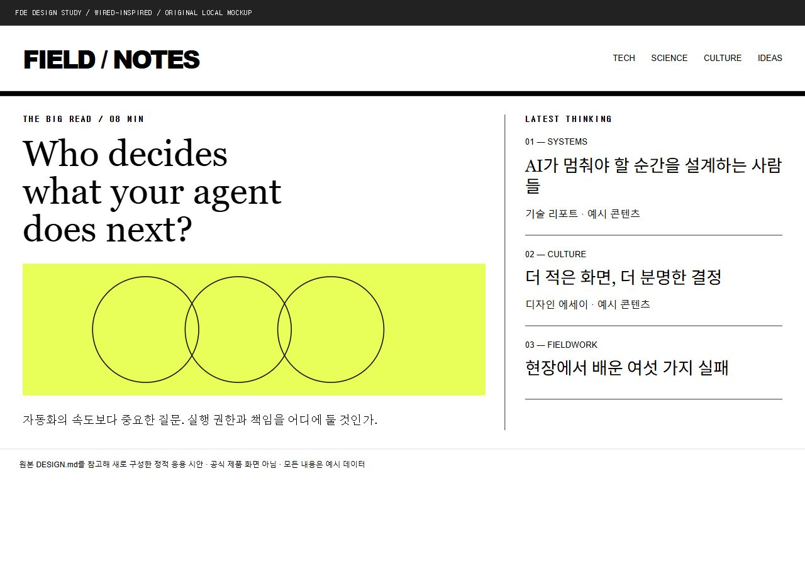MD 기반 신규 시안 ↗08 / 해외 / 매거진WIRED신문형 다단 편집과 강한 제목 대비뉴스·리포트·전문 콘텐츠화면 크게 보기 ↗DESIGN.md ↓적용 안내출처프롬프트 복사
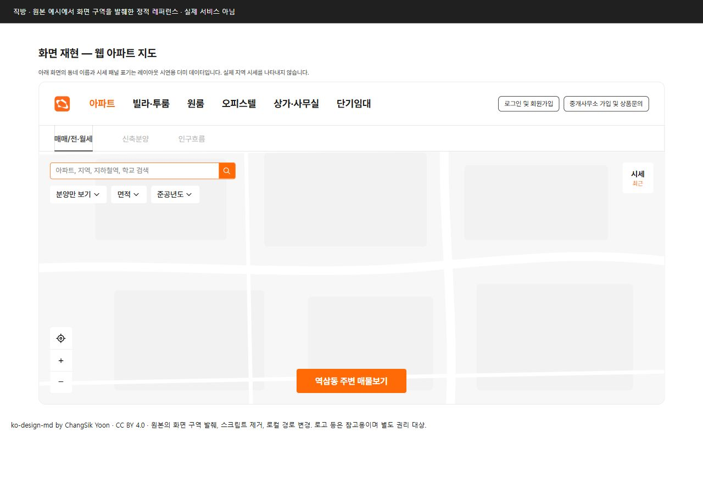원본 화면 발췌 ↗09 / 한국 / 지도·탐색직방지도와 필터, 매물 상세공간 검색·현장 방문·지역 서비스화면 크게 보기 ↗DESIGN.md ↓적용 안내출처프롬프트 복사
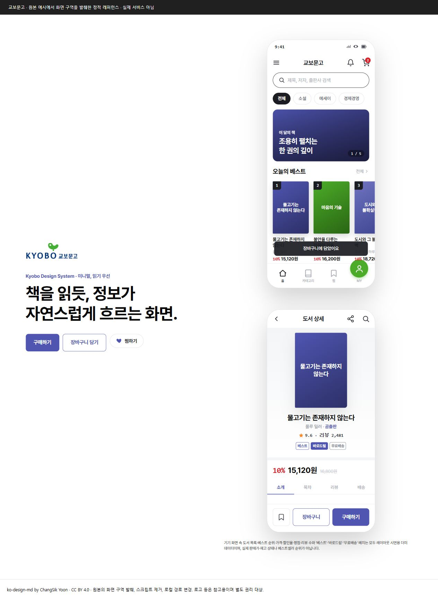원본 화면 발췌 ↗10 / 한국 / 읽기·커머스교보문고책 정보와 여백이 만드는 위계도서·지식 큐레이션·리뷰화면 크게 보기 ↗DESIGN.md ↓적용 안내출처프롬프트 복사
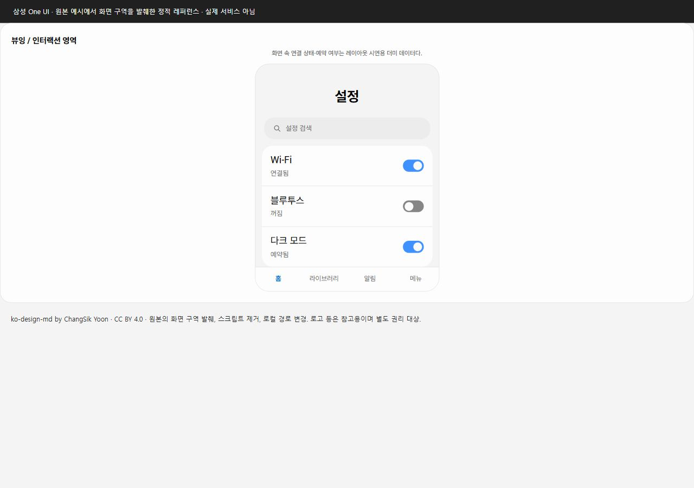원본 화면 발췌 ↗11 / 한국 / 모바일 설정삼성 One UI보기 영역과 조작 영역의 분리설정·기기 연동·모바일 유틸리티화면 크게 보기 ↗DESIGN.md ↓적용 안내출처프롬프트 복사
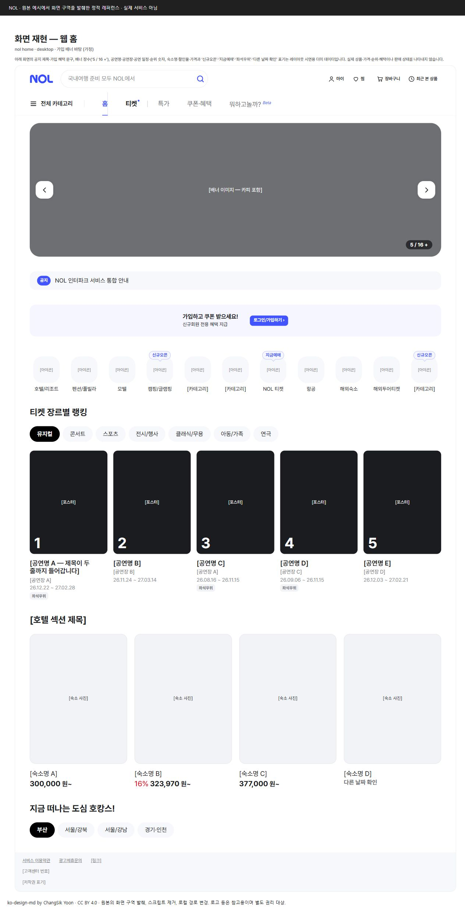원본 화면 발췌 ↗12 / 한국 / 여행·탐색NOL검색창과 다채로운 목적지 선택여행·예약·이벤트 탐색화면 크게 보기 ↗DESIGN.md ↓적용 안내출처프롬프트 복사